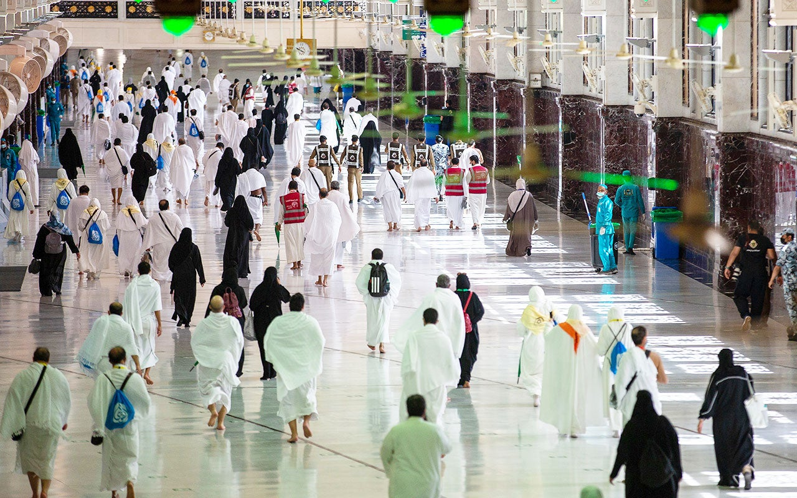

Umrah · Sa'i Guide
Sa'i Step by Step: Walking Between Safa and Marwa

Sa'i is the third rite of Umrah, performed after Tawaf. It means walking seven times between the hills of Safa and Marwa, inside Masjid al-Haram in Makkah. In doing so, you follow in the footsteps of Hajar (may Allah be pleased with her), who searched between these two hills for water for her infant son Isma'il. Allah says: "Indeed, as-Safa and al-Marwah are among the symbols of Allah" (Qur'an 2:158).
The story of Hajar: The Prophet Ibrahim (peace be upon him) left Hajar and her baby Isma'il in the barren valley of Makkah, by Allah's command. When their water ran out and the baby cried with thirst, Hajar climbed the hill of Safa looking for help, then ran to Marwa, and went back and forth seven times between the two hills. Then Allah caused the spring of Zamzam to flow for them — the same blessed water pilgrims drink today.
Conditions of a valid Sa'i:
- It must come after a valid Tawaf
- It must start at Safa and finish at Marwa
- It must be exactly seven laps — one way counts as one lap
| Lap | Walk |
|---|---|
| 1 | Safa → Marwa |
| 2 | Marwa → Safa |
| 3 | Safa → Marwa |
| 4 | Marwa → Safa |
| 5 | Safa → Marwa |
| 6 | Marwa → Safa |
| 7 | Safa → Marwa |
Sa'i step by step:
- Step 1 — Go to Safa. After the two rak'ahs of Tawaf and drinking Zamzam, go to Safa. As you approach it, recite: "Innas-Safa wal-Marwata min sha'aa'irillah" — "Indeed, Safa and Marwa are among the symbols of Allah" (Qur'an 2:158).
- Step 2 — Climb Safa and face the Kaaba. Climb Safa until you can see the Kaaba. Face it, raise your hands, and say the takbir and tahlil that the Prophet ﷺ said there: "Allahu Akbar. La ilaha illallahu wahdahu la sharika lah, lahul-mulku wa lahul-hamdu, yuhyi wa yumit, wa huwa 'ala kulli shay'in qadir" — say it three times, making your own personal du'a between each time.
- Step 3 — Walk towards Marwa. Walk at a normal pace. Between the two green lights (Milayn al-Akhdharayn), men walk briskly or jog lightly; women walk normally throughout the whole Sa'i.
- Step 4 — At Marwa, repeat the dhikr. Face the Qibla and repeat the same takbir, tahlil and du'a that you made at Safa. That completes lap 1.
- Step 5 — Walk back to Safa. The return walk is lap 2. Continue in the same way — dhikr and du'a at each hill — until you complete seven laps, ending at Marwa.
- Step 6 — Fill the walk with du'a. There is no fixed du'a for the walk itself — use the time for dhikr, Qur'an and personal du'a in any language. A beautiful du'a to repeat is: "Rabbana atina fid-dunya hasanah, wa fil-akhirati hasanah, wa qina adhaba n-nar" — "Our Lord, give us good in this world and good in the Hereafter, and shield us from the punishment of the Fire" (Qur'an 2:201).
- Step 7 — Cut the hair. After Sa'i, men shave the head (Halq) — which is more rewarding — or trim the hair (Taqsir), and women trim about a fingertip's length from the ends of their hair. With this, Ihram ends and your Umrah is complete.
Practical tips:
- The Mas'a corridor is about 450 metres one way, so seven laps are about 3.15 km and take roughly 40–60 minutes
- The corridor is air-conditioned, has several floors and wheelchair lanes
- Wudu is recommended but not required for Sa'i — Sa'i is valid without it
- Women in menses may perform Sa'i (unlike Tawaf, which waits until purity)
- You may pause and rest if you are tired — then continue from where you stopped
- Keep to the right and do not stop in the middle of the walkway, so the flow keeps moving
- Drink Zamzam afterwards and make du'a
Common mistakes:
- Starting at Marwa — a lap that starts at Marwa does not count; Sa'i must begin at Safa
- Counting a round trip as one lap — each one-way walk is a full lap
- Men jogging outside the green-light stretch — the brisk walk is only between the two green markers
- Women jogging — women walk at a normal pace everywhere in Sa'i
- Rushing through without du'a — this walk is a time of remembrance; slow down and use it
Quick questions:
- Do I need wudu for Sa'i? No. Wudu is recommended, but Sa'i is valid without it.
- Can I do Sa'i on the upper floors? Yes. The Mas'a has several floors, and Sa'i on any of them is valid — the upper floors are often quieter.
- What if I lose count of the laps? Take the lower number you are sure of and complete the rest from there.
Sources: Sa'i Guide — Halal Muslim Travel ↗ · Sa'i — Mahajja ↗ · Sa'i Between Safa and Marwa Explained — Muslim Flow ↗ · Safa and Marwa — Hajj Umrah Planner ↗